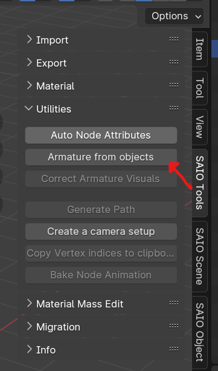

Accessory Mods
Pre-requisites:
- Have completed the Making a DLL Project section
- version 4.2 of Blender
- Intermediate 3D Theory
- Basic C++ Programming skills
- SA Tools (Make sure you've created an SA Tools Project!)
- Chao World Extended (Versions > 9.5)
- Patience
Tools can be downloaded here
What is an "Accessory"?
Accessories are a part of Chao World Extended, and have been around since version 8.3 as part of a customization model. Intially intended to expand on the ideas of hats, but without removing the Chao's head. It eventually got expanded in version 8.5 with full-body accessories. There are two methods to creating an accessory, so it'll be a longer guide than usual.
Before we start:
- Delete all default scene objects! These objects will crash your game if you do not delete them.
- Make sure SAIO is up to date! As of writing, SAIO 2.1.5 is the most recent. Keeping SAIO and Blender up-to-date will help anyone helping you eliminate issues.
- Make sure SAIO is enabled in the Addons menu! If not, go to Edit -> Preferences and go to the Addons menu to install/enable "Import-Export: Sonic Adventure I/O"
- If SAIO errors out on any operation, and it complains about .NET runtime, install the Microsoft .NET Runtimes as instructed by the SAIO Documentation.
Accessory Types:
As mentioned above, there are two types of accessories: Head accessories and Full Body Accessories. Both methods require different means of modelling so they will be gone into detail separately. The difference between head accessories and full body accessories are that head accessories work much like hats, but don't remove the head, and full body accessories allow you to rig your Chao to have the accessory follow them around.
Modelling
Importing the model
In blender, bring up the properties panel by pressing N, and navigate to the SAIO Tools tab, then click import model.

Navigate to your project folder that you created with SA Tools (Should be in Sonic Adventure 2's folder under "Projects"), navigate to Chao/Models/AL_RootObject and select a Chao. Make sure that it is a sa2mdl file. For this example we will be using al_ncn.sa2mdl
How to find what type your file is: Use the Reference page on what Chao filename you want.
Head Accessories
Head accessories are similar to hats, so the process is pretty much the same.
For head accessories, model or import your model where you want to place the accessory to be placed, minding the position of the head. Once your model is placed on the correct place, Add an Object Constraint, with the constraint being "Child of", and use the eyedropper on the head of your Chao. Once done, click the "Clear Inverse" button to clear the Inverse Correction of the Child Constraint, putting it in place where it's supposed to be. On export, it will auto triangulate.

Note: There is a vertex limit of 32768 per model.
Once done, delete the hierarchy of the Imported Chao.
Body Accessories
For body accessories, the process is much more involved, and would need you to generate an armature in order to rig the model.
Before you begin, take your imported Chao and note the names of the body parts you will be adding vertex groups to. For example:
al_ncz:
001_object_00016D7C - stomach
003_object_000167CC - left arm
010_object_00015B4C - right arm
Adjust for whichever Chao type you use.
Select the 000 object and go to SAIO Tools -> Utilities -> Armature from Objects. Press OK on the dialogue box to generate a new armature. Delete the imported Chao (the hierarchy starting with the 000 object) and let's begin!

Model or import your models over the parts you want to cover -- this can be any amount of body parts, be it hands, stomach, legs, or even wings! For this example, I'll be doing 4 parts - two on the stomach, one on the left arm, one on the right arm.
Select each of your models that you have imported or modelled, and go to the "Data" panel in the properties sidebar, and create a new vertex group. Name the vertex group the same as the body part you want to bind it to. Do this for every model you are adding as an accessory.
select your items to bind to the body, select the bone that corresponds to the name of the object (make sure that the bone selected has a rounded square surrounding it) and press Ctrl+P to parent the bone (Do not use bone relative). go into pose mode (Ctrl+Tab) to test if the bone controls the accessory as well as the body part.
If your bone controls the accessory as you like it, there is no need for the next step. If not, do the following:
How to select bones
Select the Armature object, go into pose mode, and then select the bone you want to use. Once selected, go back into object mode.
weight paint your model by selecting your model (go out of pose mode by pressing Ctrl+Tab again), press A (to select all the faces), and go to the "Data" panel of your model you want to weight paint. A new section should appear where we defined the vertex groups. make sure the "Weight" slider is at 1.000 and click "Assign". This should make all the faces follow the bone we created. Tab out of Edit mode and follow the next step.
delete all the "attach_" meshes that were created with the "Armature from Objects" process, and you're done! You now have a functional body accessory!
Note: There is a vertex limit of 32768 per model.
Texturing in Blender
Texture your model as you would when making a model, taking into mind the size of your UVs. A smaller UV size would be preferred to make loading quicker.
Once done, open your texture menu in Blender, and open the SAIO Material Properties.

Check the "Use Texture" checkbox to use textures for your model (1), and make sure to set your texture ID (2). this corresponds to the local ID that will be loaded when you look it up in Texture Editor. Do this for any other materials you're applying to the model.
Make to save and export your file as SA2MDL so that the texture information can be held by the file. You are now done with Blender and can safely close the file. Save a backup .blend file of your model just in case of complications or difficulties for someone to help out.
Assigning the texture in Texture Editor
Once you're done with setting the above settings on Blender, save your model and your texture and go to Texture Editor.

Add or remove the textures you want in the mod by clicking the "Add..." or "Remove" buttons at the bottom of the window (1). The index (2) corresponds to the Texture ID that you set in Blender. Create a unique Global ID (3) for each of your textures, so that your mod doesn't conflict with other mods.
Save the texture file as .PAK, and keep it aside for later.
Code:
If you have not created a Visual Studio project yet, follow the instructions on "Setting up your development environment".
Creating accessory IDs
Inside the extern "C" function, create an ID that we will use for accessories:
Creating a custom Texture file:
Inside the extern "C" function, the following two lines:
Let's break these two lines down:
NJS_TEXNAME - The name of your texture loader. change ExampleTex with a unique name, and replace the number inside of the square brackets (the array assignment) to the amount of textures your mod will have.
NJS_TEXLIST - The texture list - Assign this to your NJS_TEXNAME so that it knows how to read it. Give it a unique name, since you reference this in any API calls that need your texture.
Inside the CWELoad function, Load the texture file with the following code:
RegisterChaoTexlistLoad() takes two arguments - The name of your texture file (without the .PAK at the end of it) and a reference call to the NJS_TEXLIST that you created.
Adding Black Market Attributes
Add the following code below the texture list variables:
Let's break it down:
BlackMarketItemAttributes - This is a struct inside of the CWE API which contains the following, in the following order:
-
PurchasePrice - The selling price of the item sold.
-
SalePrice - the buying price if you're selling the item back to the Black Market.
-
RequiredEmblems - The amount of emblems required in the game (0 to 180 is possible in game, anything higher and they will not be able to be purchased through the Black Market.)
-
-1 - Name - Keep this as is, we define it in the RegisterChaoAccessory function.
-
-1 - Description - Keep this as is, we define it in the RegisterChaoAccessory function.
-
0 - Unknown - Keep this as is.
Adding Custom Models:
Create a ModelInfo pointer variable for each of the models you are about to add inside the extern "C" function. For example:
This is empty at the moment, so let's define it. In the Init function. underneath the pathStr variable, add the following for each model:
Replace MDLExampleAccessory with whatever your ModelInfo pointer variable was called, and change the filename to the appropriate model.
Adding the accessory:
We will be using the two types of accessories to define what our EAccessoryType Are. An EAccessoryType allows us to provide a category so that people can use the accessory in that category (They can use one head, one body, one generic1, and one generic2 accessory.)
Inside the CWELoad function, call the RegisterChaoAccessory function from the CWE API. For example:
ExampleAccessoryID = cwe_api->RegisterChaoAccessory(Generic1, MDLExampleAccessory->getmodel(), &example_texlist, &BMExampleAccessory, "Example Accessory", "Example Description");
Let's break it down:
cwe_api->RegisterChaoAccessory() - this is the function call you need to make.
Generic1 - this is EAccessoryType - This is separated into Head and Face for Head Accessories and Generic1 and Generic2 for body accessories.
MDLExampleAccessory->getmodel() - This has two parts: the ModelInfo pointer variable you created, and getmodel(), which assigns the model to the accessory.
&example_texlist - This is a reference call to the texture list you created above.
&BMExampleAccessory - This is the Black Market Attributes (the information needed for the Black Market to sell the item). This can be NULL referenced if you don't want to sell the accessory, and obtain it through other means.
"Example Accessory" - This is the name of the accessory.
"Example Description" - This is the description of the accessory.
Do this for as many accessories as you wish to create! Reminder that there is a limit of 255 accessories, some taken up by CWE.
MakeBald function
If you want to avoid head clipping on the Chao accessory, use the following code to flatten the head of the Chao, and disable jiggle on the Chao:
DisableJiggle function
If you want to stop the Chao body from clipping on an accessory, you might be interested in stopping the jiggle physics of a Chao. The following code does this:
Building the Project:
Your solution configuration should be "Release" and your solution platform should be "x86" so that your mod is small, and does not have the additional code inside your mod. Your configurations should look like the following image below:

Build the project by pressing F6 or going to Build -> Build Solution. If you have a "Build Succeeded" in your tooltip at the bottom left of your Visual Studio window, proceed. If you have a "Build Failed" message, have a look at the Sample mod to see where you went wrong, and try again.
If you still can't get your build to work, try using the example mod as a template.
Creating the mod:
If you haven't followed Making a Project, set up your mod folder. Copy the DLL file from inside your release folder into your mod folder and edit your "mod.ini" file to contain your DLLFile. For example:
Place your .SA2MDL models inside the mod folder.
Add a folder in your mod directory called "gd_PC", and inside that folder, add another directory called "PRS". Inside the "PRS" folder, add your .PAK texture files.
Save your "mod.ini" file and test your mod!
Troubleshooting:
If you have any issues with any of the mod creation process, check the Troubleshooting page to see if your problem is mentioned. If you have other issues with the mod creation process, ask around in the Chao Island Discord. If the issue is of importance to note, it will be added to the documentation after being mentioned.